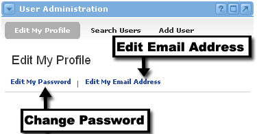
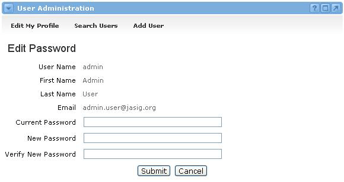

Editing My Profile
To change your email address:
- Locate the User Administration channel and click the Edit my Profile link at the top of the channel.
- You should now see the Edit My Profile view, which allows you to select one of two options.
- Select the Edit My Email Address link.
- Enter your current password for verification purposes.
- Revise your email address.
- Click the Submit button.

To change your password:
- Locate the User Administration channel and click the Edit my Profile link at the top of the channel.
- You should now see the Edit My Profile view, which allows you to select one of two options.
- Select the Edit My Password link.
- Enter your current password.
- Enter your new password.
- Enter your new password again for verification.
- Click the Submit button.
